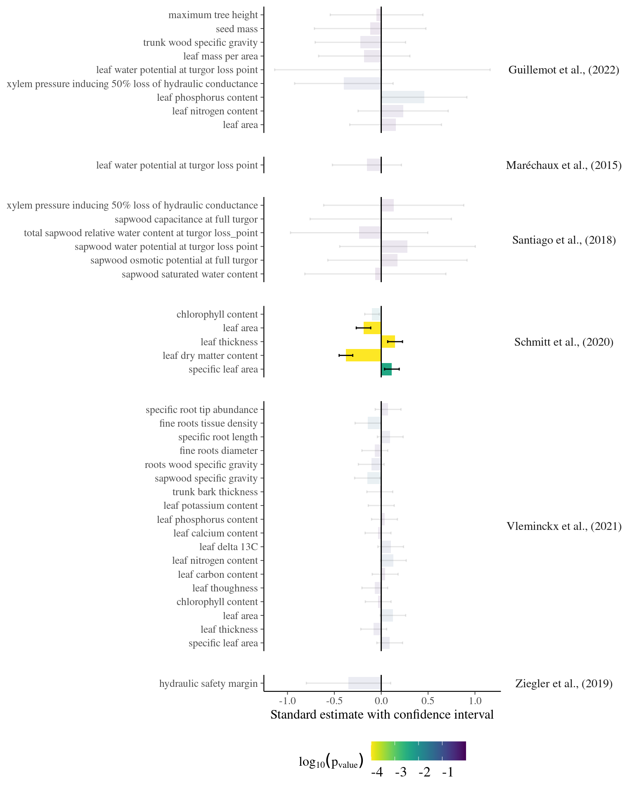

Chapter 4 Eco-evolutionary analyses
In this chapter, I investigated effects of phylogeny and ecological processes on individual growth, using phylogeny, topography and neighbourhood indices.
4.1 Methods
4.1.1 Environmental descriptors
I used the mean neighbourhood crowding index [\(NCI\); Uriarte et al. (2004)] over the last 30 years, an indirect measurement of access to light and forest gap dynamics. The mean neighbourhood crowding index \(NCI_i\) from tree individual \(i\) was calculated as follows:
\[NCI_i=\overline{\sum_{j|\delta_{i,j}<20m}DBH^2_{j,t}.e^{-\frac14\delta_{i,j}}}\]
with \(DBH_{j,t}\) the diameter of the neighbouring tree \(j\) in year \(t\) and \(\delta_{i,j}\) its distance to the individual tree \(i\). \(NCI_i\) is computed for all neighbours at a distance \(\delta_{i,j}\) inferior to the maximum neighbouring distance of 20 meters. The power of neighbours \(DBH_{j,t}\) effect was set to 2 to represent a surface. The decrease of neighbours’ diameter effect with distance was set to -0.25 to represent trees at 20 meters of the focal trees having 1% of the effect of the same tree at 0 meters. \(NCI_i\) is computed as the mean of yearly \(NCI_{i,t}\) over the last 30 years denoted by the overline.
I used the topographic wetness index (\(TWI\)) as proxies of the distribution of soil water and nutrients in Paracou. Waterlogging and topography have been highlighted as crucial for forest dynamics (Ferry et al. 2010), species-habitat relationships (Engelbrecht et al. 2007), and phenotypic variation (Schmitt et al. 2020). Topography, through the dissolution of iron oxides, litter- and tree-fall transfers and waterlogging, shapes soil nutrient distribution in tropical forests (John et al. 2007; Ferry et al. 2010). TWI was derived from a 1-m-resolution digital elevation model using SAGA-GIS (Conrad et al. 2015) based on a LiDAR campaign of the whole Paracou field station done in 2015.
4.1.2 Analyses
To study the effect of phylogeny and environment, we investigated the effects of family, genus, species & topography \(TWI\) and neighbourhood \(NCI\) indices on individual growth potential \(Gmax\) with the following linear mixed model:
\[log(Gmax) ~ \sim \mathcal N (\alpha_{species} + \beta_{NCI} \times log(NCI),\sigma) \\ |~ \alpha_{species} \sim \mathcal N(\alpha_{genus},\sigma_{species})\\ |~ \alpha_{genus} \sim \mathcal N(\alpha_{family},\sigma_{genus})\\ |~ \alpha_{family} \sim \mathcal N(\alpha,\sigma_{family})\]
We reported the corresponding marginal and conditional \(R^2\) (Nakagawa & Schielzeth 2013).
We further plotted individual growth potential \(Gmax\) along environmental gradients and across the phylogeny.
We used phylosingal to test for phylogenetic signal (Keck et al. 2016),
before computing phylogenetic correlogram and local indicator of phylogenetic association.
We used R version 3.6 for all statistical analyses (<www.r-project.org>).
4.2 Results
4.2.1 General
Most of the variation in growth potential is individual, then explained by genus before species and family. The taxonomic structure explains almost a third of the observed variation in individual growth potential. Finally, the neighbourhood (\(NCI\)) has a marked negative significant effect (Fig. 4.1) which explains 10% of the observed variation.
| log(gmax) | ||
|---|---|---|
| Predictors | Estimates | CI (95%) |
| Intercept | 3.88 | 3.05 – 4.68 |
| logNCI | -0.51 | -0.61 – -0.42 |
| logtwiP1 | -0.03 | -0.13 – 0.07 |
| Random Effects | ||
| σ2 | 0.72 | |
| τ00 Family | 0.03 | |
| τ00 Family:Genus | 0.12 | |
| τ00 Family:Genus:species | 0.04 | |
| N species | 138 | |
| N Genus | 95 | |
| N Family | 38 | |
| Observations | 7159 | |
| Marginal R2 / Conditional R2 | 0.019 / 0.347 | |


Figure 4.1: Relation between Neighbourhood crowding index (NCI) and individual growth potential (Gmax, cm/yr).
4.2.2 Phylogenetic
Species growth potential in the phylogeny (Fig. ??) is significantly structured (Tab. 4.1), with a short distance significant positive association and a long distant significant negative association (Fig. ??). Local indicator of phylogenetic association highlight the conservation of species growth potential at the genus level (Fig. ??), as illustrated for instance with fast growing Cecropia opposed to slow growing Eschweilera. However, a few species have different growth potential in the same genus, such as slow growing Drypetes variabilis opposed to fast growing Drypetes fanshawei.

Figure 4.2: Distribution of species growth potential (Gmax, cm/yr) in the phylogeny.
| parameter | Cmean | I | K | K.star | Lambda |
|---|---|---|---|---|---|
| gmax | 0.4756 (p=0.001) | 0.1371 (p=0.004) | 0.1297 (p=0.027) | 0.1375 (p=0.038) | 0.6875 (p=0.001) |
| loggmax | 0.4373 (p=0.001) | 0.1456 (p=0.001) | 0.0799 (p=0.101) | 0.0845 (p=0.064) | 0.7757 (p=0.001) |
Figure 4.3: phylogenetic correlogram of species growth potential (Gmax, cm/yr).
Figure 4.4: Local phylogenetic associations of of species growth potential (Gmax, cm/yr) among taxa in the phylogeny.